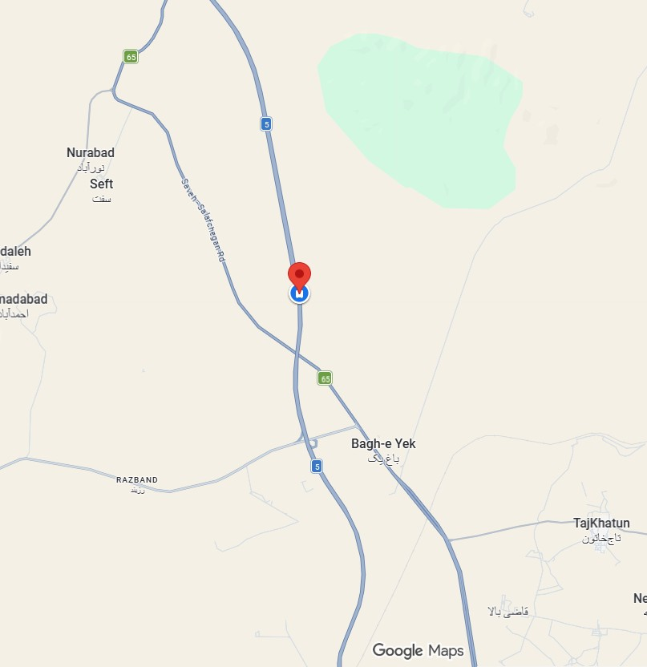
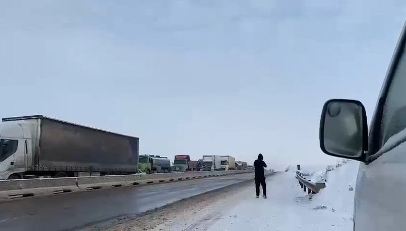

Real Story · 中文
雪像鹅毛一样掉下来，wiper 却突然坏掉。
28 February 2024，我在冬天下午赶往 Tehran。 天空开始下很大的雪，像 goose feather 一样一片一片掉下来。 路面湿滑，视线越来越差。
就在这个时候，Toyotaki 的 wiper 突然 malfunction。 没有 wiper，雪继续落，前面看不清楚。 我只能强迫自己停在 highway roadside，开 double signal，坐在那里等。
最害怕的是刚停下来的前十分钟。 我一直祈祷：不要有人从后面撞上来。 那个时候不是浪漫的 snow travel，而是真正的 road fear。

The Night
Horn sounds in the dark.
Later that night, Tuzi managed to sleep. Around midnight, she heard a lot of noise outside: horns, vehicles, movement, and confusion. But without contact lenses, she could not see clearly. She only knew that something was happening outside in the snow.
The safest thing was to stay inside Toyotaki, keep calm, and wait for morning.
Morning
The window would not open.
The next morning, the temperature had dropped below zero. The window was stuck and could not open. When Tuzi slid the curtain aside, she finally saw what had happened: on the other side, vehicles had stopped and lined up along the highway.
She did not rush. She boiled water patiently, made a light breakfast, waited for the sun to rise a little, and only then could she open the window and record the scene.

Workshop Distance
Only 3 km, but not simple.
When the snow was no longer falling and visibility improved, Tuzi could finally move again. The workshop was only about 3 km away. But in winter road conditions, with a failed wiper and frozen surroundings, even 3 km can feel very long.
English Memory Summary
A frightening winter roadside night.
On 28 February 2024, while rushing toward Tehran in winter, Tuzi encountered heavy snowfall. The snow fell like goose feathers, and Toyotaki’s wiper suddenly malfunctioned. She had to stop on the highway shoulder with hazard lights on, praying that no one would hit her from behind.
During the night, she heard horns and traffic noise outside but could not see clearly without contact lenses. In the morning, the temperature had fallen below zero and the window was frozen shut. When she finally looked outside, vehicles were lined up along the highway. After boiling water, making a light breakfast, and waiting for the sun to rise, she recorded the scene and later drove about 3 km to a workshop.
Heart Statement
有些 3 km，不是距离，是等到自己可以安全继续的时间。
The snow did not ask whether I was ready. The road simply stopped me, and I had to survive the night quietly.